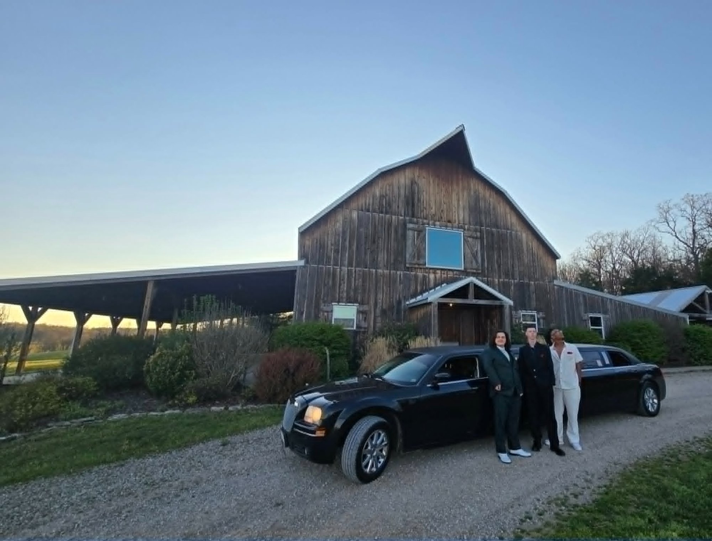
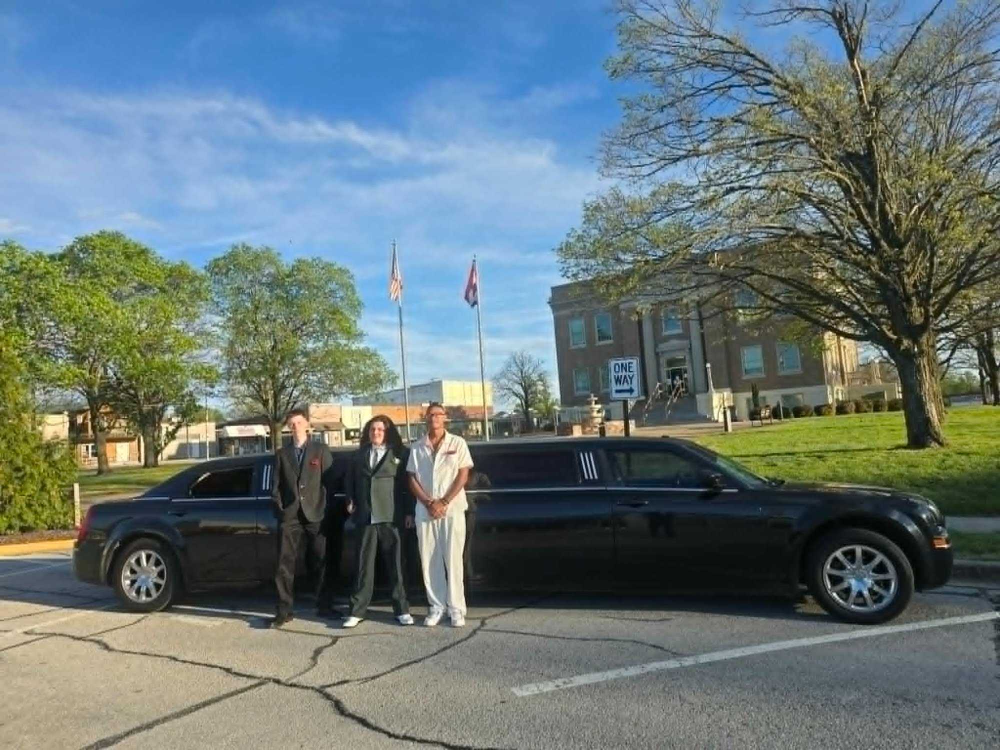

Here's something most families don't think about when they book a prom limo in Springfield MO: our minimum rental is 5 hours, but the average prom group uses about 3. The kids get dropped off, the limo sits, and when the night ends parents pick them up in their own cars. Five hours paid for. Three hours used. Two hours quietly evaporated.
We've been watching this happen for a while now, and we finally decided to say something about it — because those two hours don't have to go to waste. In fact, they might just become the most talked-about part of prom night for the parents in the group.
This is the idea that Springfield families are starting to catch on to: the parent prom after-party. Same limo. Same night. The kids get their magical entrance, and then the parents get their own moment in that luxury ride while the teens are inside dancing. It's already paid for. It's already there. Why not use it?
Why the "Extra Hours" Problem Exists
When you rent a prom limo in Springfield, Missouri, the 5-hour minimum isn't arbitrary. It covers the full arc of the night — pickup at home, photos, driving to the venue, waiting, post-prom pickup, and drop-off. That structure protects your group and ensures the limo is available when you need it.
But here's what the timeline usually looks like in practice:
Pickup & Photos
The limo arrives, the kids pile in, families take a hundred photos in the driveway. The energy is electric. This hour is everything.
Grand Entrance & Drop-Off
The ride to the venue, the big arrival, the chauffeur holding the door. This is the moment they've been waiting for all year.
Prom is Happening
The teens are inside. The limo is parked. The chauffeur is waiting. This is the window most families never think about.
Pickup & Drop-Off
The kids come out, everyone piles back in, and the night wraps up with one final ride home.
See that gap in the middle? That's where the parent after-party lives. And it's one of the best-kept secrets in prom limo rentals in Springfield MO.

💡 The math is simple. You're paying for the limo whether it's moving or parked. Coordinating a parent experience during hours 3 and 4 doesn't cost a single dollar extra — it's already in the rental. All it takes is a little planning before prom night.
What Parents Can Actually Do with 2 Hours in a Luxury Limo
Let's be clear about the spirit of this idea. This isn't about turning prom night into a parent party. It's about a group of adults — who just watched their teenagers grow up right before their eyes at that driveway photo session — taking a breath, sharing that moment together, and enjoying something they paid for but rarely get to experience themselves.
At Unique Rides Transportation, we're a Christian-run company and we keep the vibe of every ride clean and family-friendly. That standard doesn't change for parents, either. These are meaningful, memorable experiences — not reckless ones. Here are some ideas that work beautifully in the Springfield, MO area:

Dinner Around the Square
Have the limo drop the parent group at a restaurant downtown or on Battlefield Road. A sit-down dinner with other prom parents hits differently when you just arrived in a stretch Hummer. Pick a spot you never go to on a regular Tuesday. This is the night for it.
A Sunset or City Lights Drive
Springfield and the surrounding Ozarks have some genuinely beautiful drives — especially at dusk or after dark. Ask Kevin to take the long way around. Roll through parts of town you haven't seen in years. Put on some good music. Just ride. Sometimes the simplest thing is the best thing.
Dessert & Coffee Stop
Pick a bakery, a coffee shop, or an ice cream spot that's open that evening. Climb back into the limo with cups in hand, talk about the kids, laugh about the photos, and enjoy being the ones in the fancy car for once. You've earned it.
A Memory Tour
Drive past the middle school. The elementary school. The park where they used to play. The house you lived in when they were little. It sounds simple, but prom night has a way of making those places feel sacred. Doing that tour in a stretch limo makes it feel like a celebration instead of a coincidence.
A Prayer Ride
For families of faith, there's something powerful about gathering with other parents in the back of that limo and praying together over your kids on one of the biggest nights of their high school years. We love this one. It costs nothing and means everything.
Plan the After-Prom Pickup Together
Use the time to coordinate. Where are the kids going after? Who's hosting? What's the plan? Doing that in person, together, in a calm setting, is a lot more effective than a group text chain that nobody responds to until midnight.
How to Set This Up the Right Way
The key to making the parent after-party work is coordination — and a quick conversation with Kevin when you book. Here's the simple version of how it works:
- Book your prom limo early. We have a 5-hour minimum, so the time is already built in. All you're doing is deciding to use it intentionally instead of letting it sit.
- Talk to the other families. Reach out to the parents in your prom group before the night arrives. Even two or three families agreeing to ride together after drop-off is enough to make it special.
- Let Kevin know the plan. When you book, just mention that parents would like to use the limo during the wait window. We'll build that into the night's itinerary so everything flows smoothly.
- Keep it simple. You don't need a five-stop agenda. A dinner reservation or a scenic drive is plenty. The point is togetherness, not logistics.
- Be back at the venue before pickup time. We'll get you there. Kevin is always watching the clock — that's literally his job.
🙏 A note from Kevin. One of the things I hear most from parents after prom night is how fast it all went. The photos, the hugs, the wave goodbye — and then they're gone into the venue and suddenly it's quiet. I'd love for more Springfield families to use those quiet hours to be together, to celebrate, to reflect. That's what the limo is for. All of it.
Which Limo Works Best for the Parent After-Party?
Any of our three vehicles can work beautifully, and since the parent group is using the same limo the kids arrived in, the choice is already made. That said, here's how each one plays for a parent crowd:
The H2 Thunder Hummer — Best for Larger Parent Groups
If your prom group has a lot of families, the H2 Thunder's 15-passenger capacity means plenty of room for parents to ride together comfortably. The LED lighting is a lot more fun than it sounds when you're an adult sitting in it with people you've known since soccer practice fifteen years ago. The karaoke is optional. We're just saying it's there.
Pinkey — Best for an Unforgettable Moment
There is genuinely nothing like pulling up to dinner in a pink stretch limousine. If the parent group wants to feel something, Pinkey delivers that. She's one of a kind in the entire 417 area, and riding in her — even for an hour — is something people remember for years.
The Executive — Best for a More Intimate Experience
If it's just a couple of families, The Executive's elegant Chrysler 300 stretch is the perfect fit. Quieter, more refined, and ideal for a meaningful dinner or a reflective drive through the city. Sometimes less is more.
Prom Limo Rental in Springfield MO — What You Should Know Before You Book
If you haven't booked your prom limo in Springfield MO yet, here's what to expect when you work with Unique Rides Transportation:
- All prom rentals have a 5-hour minimum — and now you know exactly how to use every one of those hours
- Pricing starts at $135/hour for The Executive, $150/hour for Pinkey, and $175/hour for the H2 Thunder Hummer, plus a 20% service charge
- All chauffeurs are background checked and professionally trained
- We maintain a strict alcohol and substance-free policy — for teens and adults alike
- We serve schools across Springfield, Nixa, Ozark, Republic, Willard, Rogersville, Branson, and the greater 417 area
- Booking is simple — fill out the form on our booking page or call Kevin directly at 417-865-5600
Prom season moves fast. Every year we have families call too late and have to turn them away because the vehicle they wanted is already booked. If your teen's prom is coming up — and it is — the time to lock in your limo is right now, not next week.
The Night Is Bigger Than You Think
Prom night gets remembered differently by everyone in the car. For the teenagers, it's about the dress, the friends, the music, and the feeling of being young and alive on one of the best nights of their lives. That's exactly what it should be.
But for the parents? It's something else entirely. It's a milestone. A marker. The moment you look at your kid in that tuxedo or that gown and realize how much time has passed — and how proud you are of who they've become. That feeling deserves more than a quick wave from the driveway.
Use those two hours. Ride with the people who've been in the bleachers, in the carpool line, and at every school event alongside you. Celebrate together. The limo is already there. The night is already special. All you have to do is say yes to it.